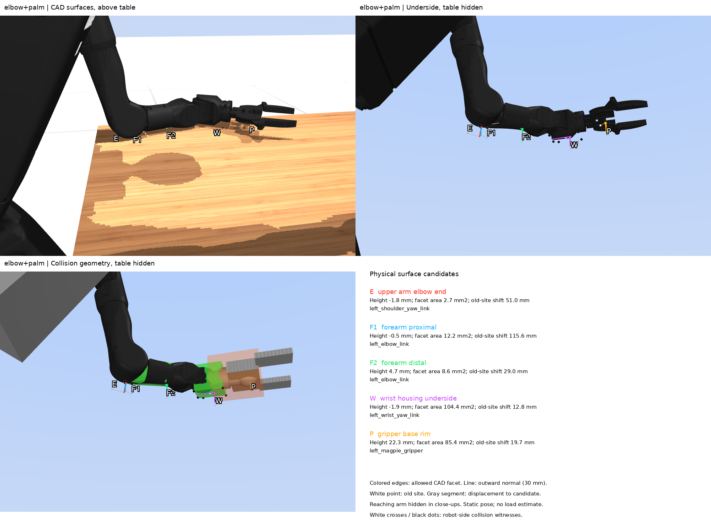
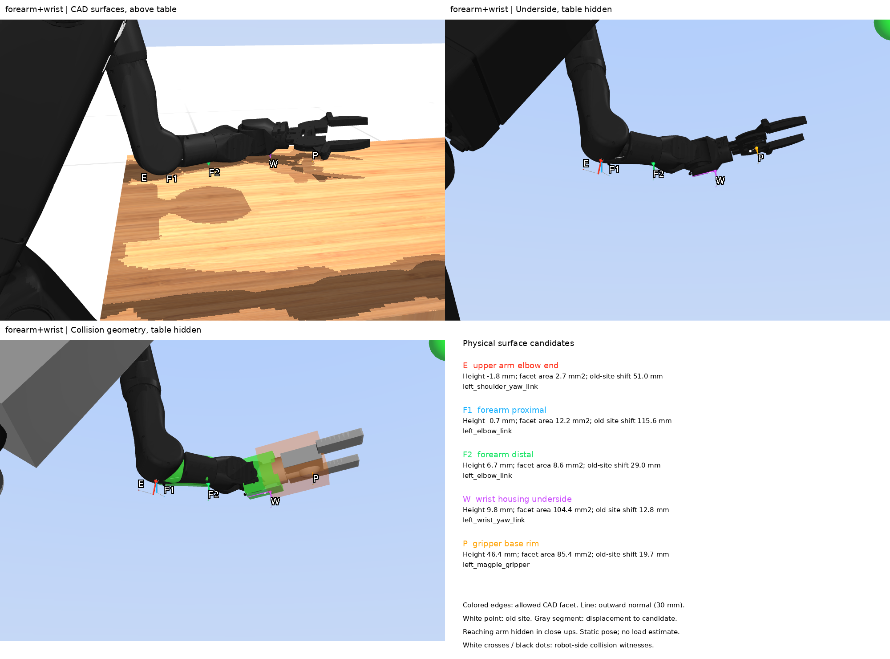

Five physical brace regions agree with their collision boundaries to within 0.165 mm over their full extents. Their nominal points differ from the old sites by 12.8–115.6 mm. Only 2 of 18 saved collision records pass the region filter; all seven wrist records fall outside the wrist facet. The gripper rim remains 22.3 mm above the table in elbow+palm. All three model sources reproduce the recorded hashes. The sibling MJPC lean export retains older wrist and gripper proxies, while the staged CAD agrees with current CL_Assets after body-frame conversion.
Boundary-distance bound is an upper bound on distance from every point in the allowed region to its collision boundary, in mm; zero means coincident surfaces. Disk diameter is twice 90% of the seed triangle’s inradius, in mm, giving a circular footprint contained in the region. A collision record is a MuJoCo contact candidate after forward evaluation; it can include a positive gap within the collision margin. A robot-side witness is the surface position reconstructed from that record’s midpoint, signed gap and normal. Acceptance requires the specified body and geom, projected triangle-union membership, at most 0.5 mm plane distance and at most 25° normal difference. It measures geometric membership, without estimating force.
The three sources are the audited staged Lean_H12_Magpie.xml, the current sibling CL_Assets/mujoco_assets/h1_2_magpie.xml at commit c727cc684520fde0b83e9c9a106b8e538881e28b, and the sibling mujoco_mpc/build_cmake lean export. “Lean export” on this page means that existing build output; hardware deployment provenance remains unverified. No source was regenerated. The full paths, include hashes, mesh-file hashes, loaded-array hashes and geometry inventories are in the comparison JSON.
| Geometry | Audited staged model | Lean export |
|---|---|---|
| Forearm pad | 35 mm radius capsule; centre height −9 mm; lower extent −44 mm | Centre height −15 mm; lower extent −50 mm |
| Wrist pad | 83 × 56 × 85 mm box | 42.5 mm radius capsule on an 83 mm axis segment; 14.5 mm excess lateral radius relative to the 28 mm CAD half-width |
| Gripper body box | 83 × 133.3552 × 34 mm; centre (122.5, 0, −1.125) mm | 85 × 63 × 133.4 mm; centre (96.5, 0, 0) mm |
| Gripper jaw centres | Approximately (204.472, ±80.093, 0.625) mm | Approximately (179.5, −3.8, ±80.1) mm |
| Gripper visual meshes | Base shells, linkage, fingers and adapter | Adapter only |
CL_Assets uses the same upper-arm, forearm and wrist CAD meshes but disables their arm collisions with zero contact masks. The staged robot adds collision meshes and table-only pad pairs. CL_Assets represents the gripper linkage with separate bodies; the stage welds its generated open-jaw geometry into one gripper body. Geometry counts are 111 staged, 92 CL_Assets and 93 lean-export geoms; position-coordinate counts are 41, 46 and 41. These complete models include different environments and joints, so raw coordinate arrays cannot be transferred by index.
Saved robot states were transferred by joint name. Across all three poses, the named upper-arm, forearm and wrist body origins and axes coincide across the sources. The staged left_magpie_gripper is welded at the wrist-yaw origin. CL_Assets leftg_base_bot has origin (0.079, 0, −0.003125) m in that frame; its positive x axis maps to wrist negative z, its positive y to wrist positive y, and its positive z to wrist positive x. The JSON stores the full rotation matrices and translations for every pose and the converted palm point and normal. Mesh principal-axis transforms were applied before comparing vertices.
| Mesh | Staged geom ID | Maximum vertex error (mm) |
|---|---|---|
| left_shoulder_yaw_link | 40 | 0.000000 |
| left_shoulder_yaw_link | 41 | 0.000000 |
| left_elbow_link | 42 | 0.000000 |
| left_elbow_link | 43 | 0.000000 |
| wrist_yaw_link | 49 | 0.000000 |
| magpie_base_bot | 53 | 0.000246 |
| magpie_base_top | 54 | 0.000416 |
| magpie_left_crank | 55 | 0.000230 |
| magpie_right_crank | 56 | 0.000230 |
| magpie_left_finger | 57 | 0.000315 |
| magpie_right_finger | 58 | 0.000310 |
| magpie_left_rocker | 59 | 0.000186 |
| magpie_right_rocker | 60 | 0.000186 |
| h12_mount | 64 | 0.000000 |
Comparison uses each model’s zero joint configuration, without settling the gripper linkage. Articulated-part errors therefore combine the baked pose and linkage configuration; fixed-shell and arm comparisons determine these patch frames.
The catalogue is opt-in research data and no existing controller reads it. It specifies body identity, collision geom identity, a nominal surface point, outward normal and exact triangle-union extent. Nominal points are triangle incentres. Region membership allows 0.5 mm normal distance and 25° normal deviation; these are proposed geometric filters. The default site sets and certified cells remain unchanged.
| Label | Body and collision geom | Local point (m) | Outward normal | Area (mm²) | Old-site displacement (mm) |
|---|---|---|---|---|---|
| E | left_shoulder_yaw_linkUnnamed mesh geom 41 (left_shoulder_yaw_link) | (-0.003635, 0.017037, -0.226591) | (-0.214705, 0.512321, -0.831522) | 2.70 | 50.97 |
| F1 | left_elbow_linkUnnamed mesh geom 43 (left_elbow_link) | (-0.000649, -0.013051, -0.043983) | (-0.023097, -0.000000, -0.999733) | 12.20 | 115.63 |
| F2 | left_elbow_linkleft_forearm_pad | (0.111243, -0.031579, -0.043962) | (0.003363, 0.040368, -0.999179) | 8.65 | 29.03 |
| W | left_wrist_yaw_linkleft_wrist_pad | (0.034194, -0.001865, -0.042419) | (0.000734, -0.043941, -0.999034) | 104.42 | 12.83 |
| P | left_magpie_gripperleft_gripper_collision | (0.137421, -0.012805, -0.018125) | (0.000000, 0.000000, -1.000000) | 85.36 | 19.66 |
E is on the distal upper-arm housing, upstream of the elbow joint. Its old elbow site was close to the joint centre, 51.0 mm from this surface. F1 and F2 belong to the forearm body downstream of that joint. F1 describes the proximal contact region, 115.6 mm from the old distal forearm site; F2 moves that old site 29.0 mm onto the distal shell. A contact on E cannot validate either F region.
W is a small facet on the wrist-yaw housing, 12.8 mm from the old wrist centre point. The original wrist point already lay on the CAD surface; this shift selects a finite facet with an extent and normal. P is on the exposed Magpie base_bot rim, 19.7 mm from the old palm site. The old site lies in the rectangular proxy face over a shell recess. The rejected recessed region and its 10.0 mm support-plane inset remain in the catalogue. P is physically separate from W even though the gripper is welded to the wrist in this model.
The five nominal points are within 0.081 mm of their associated collision boundaries. The region-wide checks below include every point between the vertices. The catalogue retains these facets as position candidates; their guaranteed seed disks are only 0.574–3.251 mm in diameter. Larger pad footprints require new geometry and loading measurements.
| Label | Boundary-distance bound (mm) | Disk diameter (mm) | Largest sampled collision-normal difference (°) |
|---|---|---|---|
| E | 0.066524 | 0.574 | 6.762 |
| F1 | 0.000001 | 1.528 | 0.000121 |
| F2 | 0.158363 | 1.800 | 7.263 |
| W | 0.164114 | 3.251 | 2.519 |
| P | 0.000240 | 2.558 | 0.000003 |
The validator checks the stored triangles against the loaded CAD vertices, their winding against the outward normals, and the nominal points against triangle membership. All checks pass. E and F1 use convex-hull supporting-plane bounds. W and P use distance to a box face whose rectangle contains every projected region vertex. F2 uses 3,321 capsule-distance samples with at most 0.100 mm spacing to bound the unsampled distance. Eight analytic membership cases cover interior, edge, vertex, a gap, excessive plane distance, reversed normal, another body and another geom.
| Saved pose | E accepted / recorded | F1 accepted / recorded | F2 accepted / recorded | W accepted / recorded | P accepted / recorded |
|---|---|---|---|---|---|
| Elbow + forearm | 0 / 1 | 1 / 1 | 0 / 2 | 0 / 1 | 0 / 0 |
| Elbow + palm | 0 / 2 | 0 / 1 | 0 / 1 | 0 / 5 | 0 / 0 |
| Forearm + wrist | 1 / 1 | 0 / 1 | 0 / 1 | 0 / 1 | 0 / 0 |
The denominators count records on each candidate’s collision geom; one F2 record in elbow+forearm has a positive 1.255 mm gap. The accepted witnesses are on the proximal forearm in elbow+forearm and the distal upper-arm housing in forearm+wrist. Reconstructing the table-side witnesses reproduces the tabletop plane within 0.0062 mm. The validation JSON records each rejection and verifies 36 body transforms across the three models and three poses.
MuJoCo samples a box-face contact manifold at a few positions. Rejecting all seven wrist witnesses prevents assigning their force locations to W, but does not prove that the full facet is separated. In elbow+palm, W’s nominal point intersects the table by 1.9 mm while the recorded witnesses lie outside its narrow triangle. A distributed-contact model would need to account for the intervening surface and preserve the resulting wrench.
| Saved pose | E height (mm) | F1 height (mm) | F2 height (mm) | W height (mm) | P height (mm) |
|---|---|---|---|---|---|
| elbow+forearm | -3.11 | -1.69 | 1.42 | 16.11 | 58.43 |
| elbow+palm | -1.78 | -0.45 | 4.74 | -1.89 | 22.30 |
| forearm+wrist | -1.76 | -0.71 | 6.73 | 9.82 | 46.36 |


A third elbow+forearm image is saved. Pose source paths and hashes, per-geom contacts, normal angles and patch height ranges are in the catalogue JSON. Earlier renders remain saved under their original filenames.
~/.claude/bin/resguard.sh status ~/.claude/bin/resguard.sh run --mem 3G --cpu 200 -- /usr/bin/time -v timeout 90s env OMP_NUM_THREADS=1 OPENBLAS_NUM_THREADS=1 MKL_NUM_THREADS=1 MUJOCO_GL=egl taskset -c 18 ~/miniconda3/envs/croco/bin/python studies/20261016_surface_catalogue.py --probe python scripts/20261015_codex_continuation.py status ~/.claude/bin/resguard.sh status ~/.claude/bin/resguard.sh run --mem 2.5G --cpu 200 -- /usr/bin/time -v timeout 90s env OMP_NUM_THREADS=1 OPENBLAS_NUM_THREADS=1 MKL_NUM_THREADS=1 MUJOCO_GL=egl taskset -c 18 ~/miniconda3/envs/croco/bin/python studies/20261016_surface_catalogue.py
The earlier comparison and render session used 9.99 s of serial numerical work and stopped at 81% five-hour quota. Its logs remain in the initial run record. This continuation used another 12.32 s: a 4.25 s validation attempt stopped on a pose-hash assertion, a corrected check took 3.44 s, and validation with three renders took 4.63 s. The assertion confused the saved text-file hash with an array hash; both are now recorded separately. Peak RSS was 2,119,096 KiB. Each job ran under resguard with a 2.5 GiB cap and one CPU thread. Future render runs use 2.7 GiB to exceed 1.3 times that measured peak. No dynamics were advanced.
python scripts/20261015_codex_continuation.py status ~/.claude/bin/resguard.sh status ~/.claude/bin/resguard.sh run --mem 2.7G --cpu 200 -- /usr/bin/time -v timeout 90s env OMP_NUM_THREADS=1 OPENBLAS_NUM_THREADS=1 MKL_NUM_THREADS=1 MUJOCO_GL=egl taskset -c 18 ~/miniconda3/envs/croco/bin/python studies/20261016_validate_surface_catalogue.py --render --update-catalogue
The resguard event log remained at 196 entries through the continuation, with zero new kills or refusals. Five-hour usage was 59% and weekly usage was 41% at the 10-minute check. Source verification covered 13 XML references, 104 mesh-file references and every recorded loaded-array hash. Full source paths and hashes are preserved below and in the comparison JSON. The validation run record includes the failed attempt, resource readings, quota readings and image inspection. The validator changes only opt-in result files when its update flag is supplied.
Measurement script · Commands, time records, image inspection and quota stop
| Source | Path | SHA-256 |
|---|---|---|
| staged | /home/humanoid/Programs/Humanoid_Simulation/crocoddyl_mpc/studies/runs/_stage/mjpc/tasks/humanoid_bench/lean/Lean_H12_Magpie.xml | 37b78e65b7c5cf0ce2d5106eeea54a630bd9f5d3439c77af94d1d7c0646fa696 |
| staged | /home/humanoid/Programs/Humanoid_Simulation/crocoddyl_mpc/studies/runs/_stage/mjpc/tasks/humanoid_bench/h1_2/h1_2_modified_magpie.xml | aa2521f9fb13c5f7d06a772fd90b53442acdc4d6a1715e9d5797346eb8755844 |
| staged | /home/humanoid/Programs/Humanoid_Simulation/crocoddyl_mpc/studies/runs/_stage/mjpc/tasks/humanoid_bench/lean/lean.xml | a7714c822237be759c355656feae403d2092cfd4a622567d4019831cacfbfb1d |
| staged | /home/humanoid/Programs/Humanoid_Simulation/crocoddyl_mpc/studies/runs/_stage/mjpc/tasks/common.xml | 958ad3b0b6c25796e78670b1bea7aec9d10a727873988bbc56a2ef225efc4797 |
| staged | /home/humanoid/Programs/Humanoid_Simulation/crocoddyl_mpc/studies/runs/_stage/mjpc/tasks/humanoid_bench/assets/floor.xml | 6f54b0cba9c629d831139defa175ff55c9e8fbb0c2cc8ee76b37109feea3d3d3 |
| current_cl | /home/humanoid/Programs/Humanoid_Simulation/CL_Assets/mujoco_assets/h1_2_magpie.xml | 05c9e421e8dc6500ebc74b8a77a43ba1a9e75fecf4468f316c9875b75cd05422 |
| current_cl | /home/humanoid/Programs/Humanoid_Simulation/CL_Assets/mujoco_assets/magpie_gripper_left.xml | 3780a2505b43e53920399d8946a58acae3e89545c5271d1e81ccf22d0db3512a |
| current_cl | /home/humanoid/Programs/Humanoid_Simulation/CL_Assets/mujoco_assets/magpie_gripper.xml | 2f774d43a432622bcf7c3564482226e49304736b1fcb37fc6696b31c2a087b8b |
| lean_export | /home/humanoid/Programs/Humanoid_Simulation/mujoco_mpc/build_cmake/mjpc/tasks/humanoid_bench/lean/Lean_H12_Magpie.xml | 5951720e4f499addf39c972934952111542ae5180c992894c1b487ae96e81056 |
| lean_export | /home/humanoid/Programs/Humanoid_Simulation/mujoco_mpc/build_cmake/mjpc/tasks/humanoid_bench/h1_2/h1_2_modified_magpie.xml | 8f77806e154042d68926e6d05912918596ad51af7e48e9f5bb0b5814051e3de2 |
| lean_export | /home/humanoid/Programs/Humanoid_Simulation/mujoco_mpc/build_cmake/mjpc/tasks/humanoid_bench/lean/lean.xml | a7714c822237be759c355656feae403d2092cfd4a622567d4019831cacfbfb1d |
| lean_export | /home/humanoid/Programs/Humanoid_Simulation/mujoco_mpc/build_cmake/mjpc/tasks/common.xml | 958ad3b0b6c25796e78670b1bea7aec9d10a727873988bbc56a2ef225efc4797 |
| lean_export | /home/humanoid/Programs/Humanoid_Simulation/mujoco_mpc/build_cmake/mjpc/tasks/humanoid_bench/assets/floor.xml | 6f54b0cba9c629d831139defa175ff55c9e8fbb0c2cc8ee76b37109feea3d3d3 |
Geometry measurement is complete. Before using these regions in contact planning, compare tabletop–triangle intersection with the 18 saved witness records and measure the force and moment change caused by moving a corner force into a facet. Any larger region must pass 20261016_validate_surface_catalogue.py --render --update-catalogue again. Hardware material, pad footprint, friction and sustained force capacity require loading measurements; the catalogue remains disabled by default and uncertified.